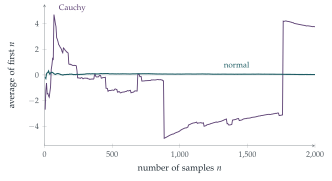

STEP III 1995, Question 12
Read the question before you go on. It is in the STEP Support Programme’s question database: step.maths.org/questions/95-s3-q12
The hook
Take the average of many measurements, and the random errors cancel out: the average settles down to the true value. This law of large numbers is the foundation of all statistics. But it has a hidden assumption: the measurements must have a finite mean. This question constructs a perfectly natural random variable, the ratio of two independent standard normal variables, which has no mean at all. Its averages never settle down; in fact the average of a million of them has exactly the same distribution as a single one.
This is the Cauchy distribution. Its density looks like a harmless bell, but its tails are so heavy that occasional enormous values dominate any average. The question finds it with a lovely geometric argument: a ratio of coordinates is the slope of a line, and radial symmetry makes the angle of that line uniform.
Before you start
If \((U, V)\) is a random point whose density depends only on its distance from the origin, what can you say about the angle \(\Theta\) that the line from the origin to the point makes with an axis?
Rotating the plane does not change the density, so every direction is equally likely: the angle \(\Theta\) is uniform on \([0, 2\pi)\). And \(\frac UV\) depends only on the direction, not the distance.
Working it through
Stage 1 The joint density
Since \(X\) and \(Y\) are independent, their joint density is the product of their densities: \[\mathrm{f}(x, y) = \frac{1}{\sqrt{2\pi}}e^{-x^2/2}\cdot\frac{1}{\sqrt{2\pi}}e^{-y^2/2} = \frac{1}{2\pi}e^{-\frac12(x^2 + y^2)}.\] It depends on \(x\) and \(y\) only through \(x^2 + y^2\), the square of the distance from the origin: the density is constant on circles centred at the origin. That is what “radially symmetrical” means.
Stage 2 Using the symmetry
\(\frac UV < k\) happens in two ways, according to the sign of \(V\). How are they related by the rotation through \(180^\circ\), \((u, v) \mapsto (-u, -v)\)?
\(\frac UV < k\) means: either \(V > 0\) and \(U < kV\), or \(V < 0\) and \(U > kV\). The rotation \((u, v) \mapsto (-u, -v)\) maps the first region onto the second, and preserves the density. So the two have the same probability, and \[\mathrm{P}\Bigl(\frac UV < k\Bigr) = 2\mathrm{P}(U < kV, V > 0). \qed\]
Stage 3 An angle
Draw the region \(\{V > 0, U < kV\}\) in the plane with \(u\) horizontal and \(v\) vertical. It is a wedge with its vertex at the origin. What is its angle?
The region \(V > 0\) is the upper half-plane. The line \(u = kv\) through the origin makes angle \(\arctan k\) with the positive \(v\)-axis (towards the positive \(u\) side when \(k > 0\)). The part of the upper half-plane to the left of this line is a wedge of angle \(\frac\pi2 + \arctan k\). By radial symmetry, the probability of a wedge is its angle divided by \(2\pi\), so \[\mathrm{P}\Bigl(\frac UV < k\Bigr) = 2\cdot\frac{\frac\pi2 + \arctan k}{2\pi} = \frac12 + \frac1\pi\arctan k.\] Differentiating with respect to \(k\) gives the density \[\mathrm{g}(k) = \frac{1}{\pi(1 + k^2)}. \qed\]
Looking back
Independent normals are radially symmetric. The product of two normal densities depends only on distance.
Ratio means direction. \(\frac UV\) depends only on the angle of the point, which is uniform.
Probabilities of wedges. With radial symmetry, the probability of a wedge is proportional to its angle.
What’s really going on
No mean
The mean of the Cauchy distribution would be \(\int_{-\infty}^\infty\frac{k}{\pi(1 + k^2)}\,\mathrm{d}k\), but \(\int_0^K\frac{k}{1 + k^2}\,\mathrm{d}k = \frac12\ln(1 + K^2) \to \infty\): the integral does not converge, and the mean does not exist. (Symmetry might suggest the answer is \(0\), but the positive and negative parts are both infinite, and \(\infty - \infty\) has no value.) The variance is infinite too.
Worse, the average of \(n\) independent Cauchy variables is again Cauchy, with exactly the same distribution. (One way to see this uses the characteristic function \(\mathrm{E}(e^{itX}) = e^{-|t|}\).) So averaging does not help at all: the average of a million measurements is no more reliable than one. Figure 12.22.1 shows what happens: the running average of normal samples settles down, while that of Cauchy samples lurches about for ever, jolted by occasional huge values.

Where Cauchy variables come from
Shine a torch, pointing in a uniformly random direction, at a wall: the position of the spot on the wall is Cauchy distributed. In physics the same density, called the Lorentzian, describes the shape of spectral lines and resonance peaks (compare Section 11.1). In finance, heavy-tailed distributions like the Cauchy are used to model the occasional crashes that normal models wildly underestimate. The lesson for statistics is serious: methods based on averages and variances fail for heavy-tailed data, and robust methods, such as using the median (which for the Cauchy distribution is perfectly well behaved), are needed.
The distribution was studied by Siméon Denis Poisson in 1824, who noticed that it violates the law of large numbers. Augustin-Louis Cauchy met it in 1853 during a public dispute with Irénée-Jules Bienaymé over the method of least squares: Cauchy used it to show that least squares can be a poor method when errors are heavy-tailed. The name stuck to Cauchy, an example of what Stephen Stigler calls “Stigler’s law of eponymy”: no scientific discovery is named after its original discoverer.
The thinking skill
Before using a mean or variance, make sure the integral defining it converges. Symmetry does not make a divergent integral zero.
At university, integrability conditions are part of every theorem in probability: the law of large numbers needs a finite mean, the central limit theorem (Section 12.24) a finite variance. The Cauchy distribution is the standard counterexample when they fail.
Try this next
The torch. A torch at distance \(1\) from a long straight wall points in a direction making angle \(\Theta\) with the perpendicular, where \(\Theta\) is uniform on \((-\frac\pi2, \frac\pi2)\). Show that the spot’s position \(\tan\Theta\) has the Cauchy distribution.
The reciprocal. Show that if \(C\) is Cauchy, so is \(\frac1C\). (Hint: \(\frac UV\) and \(\frac VU\).)
The median works. Show that the median of the Cauchy distribution is \(0\) and its quartiles are \(\pm1\).
Radius and angle. For \(X\), \(Y\) independent standard normals, show by changing to polar coordinates that \(R^2 = X^2 + Y^2\) is exponential with mean \(2\) and is independent of the angle. (This is the basis of the Box–Muller method for generating normal random numbers.)
Further reading
Geoffrey Grimmett & Dominic Welsh, Probability: An Introduction (Oxford University Press), on transformations of random variables.
Nassim Nicholas Taleb, The Black Swan (Penguin). Heavy tails and why they matter, for a general reader.
Stephen Stigler, The History of Statistics (Harvard University Press). Includes the Cauchy–Bienaymé dispute.